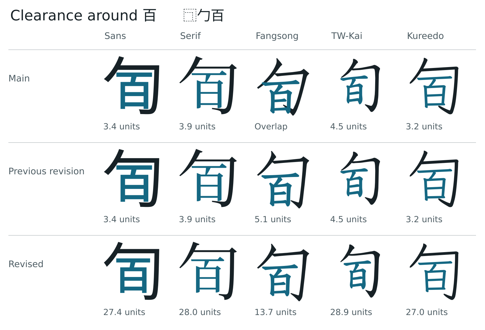
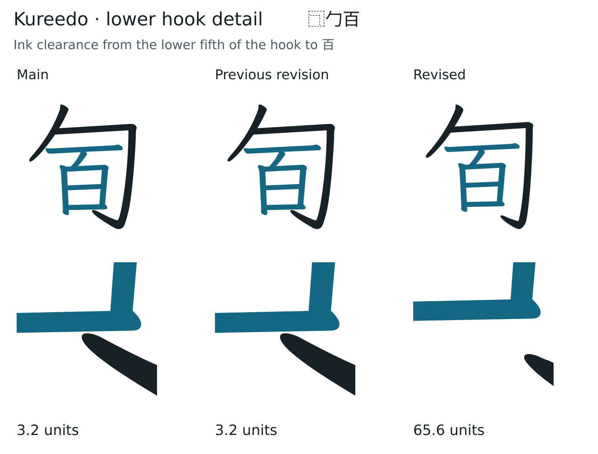

勹 enclosure comparisons
Main cda86dca · Previous revision 82b613bb · Revised


Regional IDS
Each sheet includes the default IDS rendering and a reconstruction with the encoded character excluded as a source.
Additional generated forms
Source outlines
Each font reference names its source. Missing entries have no outline in that face or its configured fallback fonts.
Measurements and downloads